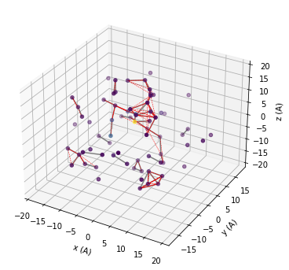
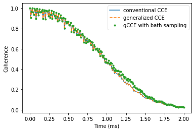
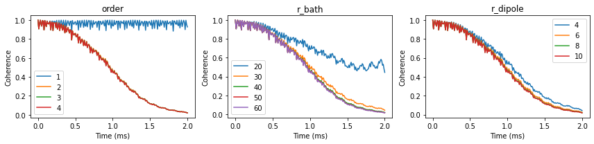
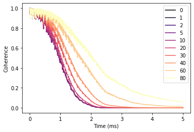

NV Center in Diamond
In this tutorial we will go over the main steps of running CCE calculations for the NV center in diamond with the PyCCE module. Those include:
Generating the spin bath using the
pycce.BathCellinstance.Setting up properties of the
pycce.Simulatorinstance.Running the calculations with the
Simulator.computefunction.
We will compute the Hahn-echo coherence function (with decoupling \(\pi\)-pulse applied) using the following available methods:
Conventional CCE.
Generalized CCE (gCCE).
gCCE with Monte-Carlo bath sampling.
Finally, we will run a simulation on how different bath polarization will impact Hahn-echo signal.
[26]:
import numpy as np
import matplotlib.pyplot as plt
import pandas as pd
import sys
import pycce as pc
import ase
from mpl_toolkits import mplot3d
seed = 8805
np.random.seed(seed)
np.set_printoptions(suppress=True, precision=5)
Generate nuclear spin bath
Building a supercell of nuclear spins from the ase.Atoms object.
Build BathCell
To generate cell it from ase.atoms object, use classmethod BathCell.from_ase.
[27]:
from ase.build import bulk
# Generate unitcell from ase
diamond = bulk('C', 'diamond', cubic=True)
diamond = pc.read_ase(diamond)
The following attributes are created with this initiallization:
.cellis ndarray containing information of lattice vectors. Each column is a lattice vector in cartesian coordinates..atomsis a dictionary with keys corresponding to the atom name, and each item is a list of the coordinates in cell coordinates.
[28]:
print('Cell\n', diamond.cell)
print('\nAtoms\n', diamond.atoms)
Cell
[[3.57 0. 0. ]
[0. 3.57 0. ]
[0. 0. 3.57]]
Atoms
defaultdict(<class 'list'>, {'C': [array([0., 0., 0.]), array([0.25, 0.25, 0.25]), array([0. , 0.5, 0.5]), array([0.25, 0.75, 0.75]), array([0.5, 0. , 0.5]), array([0.75, 0.25, 0.75]), array([0.5, 0.5, 0. ]), array([0.75, 0.75, 0.25])]})
Populate BathCell with isotopes
The PyCCE package uses EasySpin database of the concentrations of all common stable isotopes with non-zero spin, however the user can proide custom concentrations.
Use function BathCell.add_isotopes to add one (or several) isotopes of the element. Each isotope is initiallized with tuple containing name of the isotope and its concentration.
Name of the isotope includes the number and element symbol, provided in the atoms object. As an output, the BathCell.add_isotopes method returns view on dictionary BathCell.isotopes which can be modified directly. Structure of the dictionary-like object:
{element_1: {isotope_1: concentration, isotope_2: concentration},
element_2: {isotope_3: concentration ...}}
[29]:
# Add types of isotopes
diamond.add_isotopes(('13C', 0.011))
[29]:
defaultdict(dict, {'C': {'13C': 0.011}})
Isotopes may also be directly added to BathCell.isotopes. For example, below we are adding an isotope without the nuclear spin:
[30]:
diamond.isotopes['C']['14C'] = 0.001
Set z-direction of the bath (optional)
In the Simulator object everything is set in \(S_z\) basis. When the quantization axis of the defect does not allign with the (0, 0, 1) direction of the crystal axis, the user needs to define the axis.
If one wants to specify the complete rotation of cartesian axes, one can provide a rotation matrix to rotate the cartesian reference frame with respect to the cell coordinates by calling the BathCell.rotate method.
[31]:
# set z direction of the defect
diamond.zdir = [1, 1, 1]
Generate spin bath
To generate the spin bath, use the BathCell.gen_supercell method. First argument is the linear size of the supercell (minimum distance between any two faces of the supercell is equal to or larger than this parameter). Additional keyword arguments are remove and add.
remove takes a tuple or list of tuples as an argument. First element of each tuple is the name of the atom at that location, second element - coordinates in unit cell coordinates. If such atoms are found in the supercell, they are removed from it.
add takes a tuple or list of tuples as an argument. First element of each tuple is the name of the isotope at that location, second element - coordinates in unit cell coordinates. Each of the specified isotopes will be added in the final supercell at specified locations.
[32]:
# Add the defect. remove and add atoms at the positions (in cell coordinates)
atoms = diamond.gen_supercell(200, remove=[('C', [0., 0, 0]),
('C', [0.5, 0.5, 0.5])],
add=('14N', [0.5, 0.5, 0.5]),
seed=seed)
/home/onizhuk/midway/codes_development/pyCCE/pycce/bath/array.py:222: UserWarning: Spin type for 14C was not provided and was not found in common isotopes.
obj[n] = array[n]
Note, that because the 14C isotope doesn’t have a spin, PyCCE does not find it in common isotopes, and raises a warning. We have to provide SpinType for it separately, or define the properties as follows:
[33]:
atoms['14C'].gyro = 0
atoms['14C'].spin = 0
BathArray Structure
The bath spins are stored in the BathArray object - a subclass of np.ndarray with fixed datastructure:
Nfielddtype('<U16')contains the names of bath spins.xyzfielddtype('<f8', (3,))contains the positions of bath spins (in A).Afielddtype('<f8', (3, 3))contains the hyperfine coupling of bath spins (in kHz).Qfielddtype('<f8', (3, 3))contains the quadrupole tensor of bath spins (in kHz) (Relevant for spin >= 1).
All of the fields are accesible as attributes of BathArray. Additionally, the subarrays of the specific spins are accessible with their name as indicated above.
Upon generation of the array from the cell, the Q and A fields are empty. The Hyperfine couplings will be automatically computed by the Simulator object, however the quadrupole couplings must be set by the user.
The additional attributes allow one to access SpinType properties:
namereturns the spin name or array of spin names;spinreturns the value of the spin or array of ones;gyroreturns gyromagnetic ratios of the spins;qreturns quadrupole constants of the spins;hreturns a dictionary with user-defined additions to the Hamiltonian.detuningreturns detunings of the spins (See definition below).
For example, below we print out the attributes of the first two spins in the BathArray.
[34]:
print('Names\n', atoms[:2].N)
print('\nCoordinates\n', atoms[:2].xyz)
print('\nHyperfine tensors\n', atoms[:2].A)
print('\nQuadrupole tensors\n',atoms[:2].Q)
Names
['13C' '13C']
Coordinates
[[-13.97678 -1.48178 -92.75132]
[ 27.89939 42.17939 -45.86038]]
Hyperfine tensors
[[[0. 0. 0.]
[0. 0. 0.]
[0. 0. 0.]]
[[0. 0. 0.]
[0. 0. 0.]
[0. 0. 0.]]]
Quadrupole tensors
[[[0. 0. 0.]
[0. 0. 0.]
[0. 0. 0.]]
[[0. 0. 0.]
[0. 0. 0.]
[0. 0. 0.]]]
The properties of spin types (gyromagnetic ratio, quadrupole moment, etc) are stored in the BathArray.types attribute, which is an instance of SpinDict containing SpinType classes. For most known isotopes SpinType can be found in the pycce.common_isotopes dictionary, and is set by default (including electron spin-1/2, which is denoted by setting N = e). The user can add additional SpinType objects, by calling BathArray.add_type method or setting elements of
SpinDict directly. For details of the first approach see documentation of SpinDict.add_type method.
The direct setting of types is rather simple. The user can set elements of SpinDict with tuple, containing:
(spin, gyromagnetic ratio, quadrupole moment (optional), detuning (optional), )
OR
(isotope, spin, gyromagnetic ratio, quadrupole moment (optional), detuning (optional), )
where:
isotope (str) is the name of the given spin (same one as in
Nfield ofBathArray) to define newSpinTypeobject. The key ofSpinDicthas to be the correct name of the spin (“isotope” field in the tuple).spin (float) is the total spin of the given bath spin.
gyromagnetic ratio (float) is the gyromagnetic ratio of the given bath spin.
quadrupole moment (float) is the quadrupole moment of the given bath spin. Relevant only when electric field gradient are used to generate quadrupole couplings for spins, stored in the
BathArray, withBathArray.from_efgmethod.detuning (float) is an additional energy splitting for model spins, included as an extra \(+\omega \hat S_z\) term in the Hamiltonian, where \(\omega\) is the detuning.
Units of gyromagnetic ratio are rad / ms / G, quadrupole moments are given in barn, detunings are given in kHz.
[35]:
# Several ways to set SpinDict elements
atoms.types['14C'] = 0, 0, 0
atoms.types['Y'] = ('Y', 0, 0, 0)
atoms.types['A'] = pc.SpinType('A', 0, 0, 0)
print(atoms.types)
SpinDict(13C: (0.5, 6.7283), 14N: (1.0, 1.9338, 0.0204), 14C: (0.0, 0.0000), ...)
Simulator class
The parameters of the CCE simulator engine.
Main parameters to consider:
spin— Either instance of theCenterArrayor float - total spin of the central spin (assuming one central spin).bath— spin bath in any specified format. Can be either:Instance of
BathArrayclass;ndarraywithdtype([('N', np.str_, 16), ('xyz', np.float64, (3,))])containing names of bath spins (same ones as stored in self.ntype) and positions of the spins in angstroms;The name of the
.xyztext file containing 4 columns: name of the bath spin and xyz coordinates in A.
r_bath— cutoff radius around the central spin for the bath.order— maximum size of the cluster.r_dipole— cutoff radius for the pairwise distance to consider two nuclear spins to be connected.magnetic_field— applied magnetic field. Can also be provided during the simulation run.pulses— number of pulses in Carr-Purcell-Meiboom-Gill (CPMG) sequence or the pulse sequence itself.
For the full description see the documentation of the Simulator object.
First we setup a “mock” instance of Simulator to visualize the smaller part of the bath around the central spin.
[36]:
# Setting the runner engine
mock = pc.Simulator(spin=1, position=[0,0,0],
bath=atoms, r_bath=20,
r_dipole=6, order=3)
During the initiallization, depending on the provided keyword arguments several methods may be called:
Simulator.read_bathis called if keywordbathis provided. It may take several additional arguments:r_bath- cutoff distance from the qubit for the bath.skiprows- ifbathis provided as.xyzfile, this argument tells how many rows to skip when reading the file.external_bath-BathArrayinstance, which contains bath spins with pre defined hyperfines to be used.hyperfine- defines the way to compute hyperfine couplings. If it is not given andbathdoesn’t contain any predefined hyperfines (bath['A'].any() == False) the point dipole approximation is used. Otherwise it can be an instance ofpc.Cubeobject, or callable with signaturefunc(coord, gyro, central_gyro), wherecoordis an array of the bath spin coordinate, gyro is the gyromagnetic ratio of bath spin, central_gyro is the gyromagnetic ratio of the central bath spin.types- instance ofSpinDictor input to create one.error_range- maximum allowed distance between positions inbathandexternal_bathfor two spins to be considered the same.ext_r_bath- cutoff distance from the qubit for theexternal_bath. Useful ifexternal_bathhas very assymetric shape and user wants to keep the precision level of the hyperfine at different distances consistent.imap- instance of thepc.InteractionMapclass, which contain tensor of bath spin interactions. If not provided, interactions between bath spins are assumed to be the same as one of point dipoles.
Generates
BathArrayobject with hyperfine tensors to be used in the calculation.Simulator.generate_clustersis called iforderandr_dipoleare provided. It producesdictobject, which contains the indexes of the bath spins in the clusters.We implemented the following procedure to determine the clusters:
Each bath spin \(i\) forms a cluster of one. Bath spins \(i\) and \(j\) form cluster of two if there is an edge between them (distance \(d_{ij} \le\)
r_dipole). Bath spins \(i\), \(j\), and \(k\) form a cluster of three if enough edges connect them (e.g., there are two edges \(ij\) and \(jk\)) and so on. In general, we assume that spins \(\{i..n\}\) form clusters if they form a connected graph. Only clusters up to the size indicated by theorderparameter (equal to CCE order) are included.
We use matplotlib to visualize the spatial distribution of the spin bath. The grey lines show connected pairs of nuclear spins, red dashed lines show clusters of three. You can try to increase r_dipole, r_bath parameters, or increase order and visuallize.
[37]:
# add 3D axis
fig = plt.figure(figsize=(6,6))
ax = fig.add_subplot(projection='3d')
# We want to visualize the smaller bath
data = mock.bath
# First plot the positions of the bath
colors = np.abs(data.A[:,2,2]/data.A[:,2,2].max())
ax.scatter3D(data.x, data.y, data.z, c=colors, cmap='viridis');
# Plot all pairs of nuclear spins, which are contained
# in the calc.clusters dictionary under they key 2
for c in mock.clusters[2]:
ax.plot3D(data.x[c], data.y[c], data.z[c], color='grey')
# Plot all triplets of nuclear spins, which are contained
# in the calc.clusters dictionary under they key 3
for c in mock.clusters[3]:
ax.plot3D(data.x[c], data.y[c], data.z[c], color='red', ls='--', lw=0.5)
ax.set(xlabel='x (A)', ylabel='y (A)', zlabel='z (A)');

Now we setup Simulator object for the actual simulation.
[38]:
# Parameters of CCE calculations engine
# Order of CCE aproximation
order = 2
# Bath cutoff radius
r_bath = 40 # in A
# Cluster cutoff radius
r_dipole = 8 # in A
We will use the CenterArray object to store the properties of the central spin, however for simple usecases one can provide the corresponding keywords to the Simulator object directly (see examples below).
[39]:
# position of central spin
position = [0, 0, 0]
# Qubit levels (in Sz basis)
alpha = [0, 0, 1]; beta = [0, 1, 0]
# ZFS Parametters of NV center in diamond
D = 2.88 * 1e6 # in kHz
E = 0 # in kHz
nv = pc.CenterArray(spin=1, position=position, D=D, E=E, alpha=alpha, beta=beta)
The code already knows the properties of the most common nuclear spins and of elecron spin (accessible under the name 'e'), however the user can provide their own by calling BathArray.add_type method. The way to initiallize SpinType objects is the same as in SpinDict above.
[40]:
# The code already knows most exsiting isotopes.
# Bath spin types
# name spin gyro quadrupole (for s>1/2)
spin_types = [('14N', 1, 1.9338, 20.44),
('13C', 1 / 2, 6.72828),
('29Si', 1 / 2, -5.3188),]
atoms.add_type(*spin_types)
Setting the Simulator object
All of the kwargs can be provided at the moment of creation. If all of the kwargs are provided, several methods of the Simulator class are called:
Simulator.read_bath;Simulator.generate_clusters.
The details are available in the Simulator methods description.
[41]:
# Setting the runner engine
calc = pc.Simulator(spin=nv, bath=atoms,
r_bath=r_bath, r_dipole=r_dipole, order=order)
Taking advantage of subclassing np.ndarray we can change in situ the quadrupole tensor of the Nitrogen nuclear spin.
[42]:
nspin = calc.bath
# Set model quadrupole tensor at N atom
quad = np.asarray([[-2.5, 0, 0],
[0, -2.5, 0],
[0, 0, 5.0]]) * 1e3 * 2 * np.pi
nspin['Q'][nspin['N'] == '14N'] = quad
Note, that we need to apply the boolean mask second because of how structured arrays work.
Compute coherence function with conventional CCE
The general interface to compute any property with PyCCE is implemented through the Simulator.compute method. It takes two keyword arguments to determine which quantity to compute and how:
methodcan take ‘cce’ or ‘gcce’ values, and determines which method to use - conventional or generalized CCE.quantitycan take ‘coherence’ or ‘noise’ values, and determines which quantity to compute - coherence function or autocorrelation function of the noise.
Each of the methods can be performed with Monte Carlo bath state sampling (if nbstates keyword is non zero) and with interlaced averaging (If interlaced keyword is set to True).
In the first example we use the conventional CCE method without Monte Carlo bath state sampling. In the conventional CCE method the Hamiltonian is projected on the qubit levels, and the coherence is computed from the overlap of the bath evolution, entangled with two different qubit states.
The conventional CCE requires one argument:
timespace— time points at which the coherence function is computed.
Additionally, one can provide the following arguments now, instead of when initiallizing Simulator object:
pulses— number of pulses in CPMG sequence (0 - FID, 1 - HE etc., default 0) or explicit sequence of pulses asSequenceclass instance.mangetic_field— magnetic field along z-axis or vector of the magnetic field. Default (0, 0, 0).
[43]:
# Time points
time_space = np.linspace(0, 2, 201) # in ms
# Number of pulses in CPMG seq (0 = FID, 1 = HE)
n = 1
# Mag. Field (Bx By Bz)
b = np.array([0, 0, 500]) # in G
l_conv = calc.compute(time_space, pulses=n, magnetic_field=b,
method='cce', quantity='coherence', as_delay=False)
[44]:
%%timeit
calc.compute(time_space, pulses=n, magnetic_field=b,
method='cce', quantity='coherence', as_delay=False)
705 ms ± 9.74 ms per loop (mean ± std. dev. of 7 runs, 1 loop each)
Generalized CCE (gCCE)
In contrast to the conventional CCE method, in generalized CCE arpproach each cluster includes the central spin explicitly.
Simulator can take pulses argument as an actual pulse sequence with an iterable of Pulse objects.
For example:
p1 = pc.Pulse('x', np.pi)
p2 = pc.Pulse('y', np.pi)
seq = [p1, p2, p1, p2]
seq will define XY-4 pulse sequence.
An integer number to define the number of pulses is also accepted as in the case of conventional CCE. If the integer is provided, the code assumes the CPMG sequence.
[45]:
# Hahn-echo pulse sequence
pulse_sequence = [pc.Pulse('x', np.pi)]
# Calculate coherence function
l_generatilze = calc.compute(time_space, magnetic_field=b,
pulses=pulse_sequence,
method='gcce', quantity='coherence')
[46]:
%%timeit
calc.compute(time_space, magnetic_field=b,
pulses=pulse_sequence,
method='gcce',
quantity='coherence')
1.92 s ± 24.6 ms per loop (mean ± std. dev. of 7 runs, 1 loop each)
gCCE with random sampling of bath states
Using this approach, one may carry out generalized CCE calculations for the set of random bath states. This functionality can be turned on by by setting the keyword argument nbstates to a number of bath states to sample over. Recommended number of bath states is above 100, but the convergence should be checked for each system. Note, that this computation is roughly nbstates times longer than an equivalent generalized CCE calculation, as it computes everything nbstates times.
For details see help(calc.compute).
[47]:
# Number of random bath states to sample over
n_bath_states = 20
# Calculate coherence function
l_gcce = calc.compute(time_space, magnetic_field=b,
pulses=pulse_sequence,
nbstates=n_bath_states,
method='gcce', quantity='coherence', seed=seed)
[48]:
%%timeit
n_bath_states = 5
calc.compute(time_space, magnetic_field=b,
pulses=pulse_sequence,
nbstates=n_bath_states,
method='gcce', quantity='coherence', seed=seed)
11.9 s ± 379 ms per loop (mean ± std. dev. of 7 runs, 1 loop each)
Take a look at the results of three different methods, and check that they produce similar coherence decay. Note that the results obtained using gCCE with bath states sampling deviates from other ones (generalized and conventional CCE), as the chosen number of states (20) is not enough to converge.
[57]:
plt.plot(time_space, l_conv.real,
label='conventional CCE')
plt.plot(time_space, l_generatilze.real,
label='generalized CCE', ls='--')
plt.plot(time_space, l_gcce.real,
label='gCCE with bath sampling', ls='', marker='.')
plt.legend()
plt.xlabel('Time (ms)')
plt.ylabel('Coherence');

Convergence parameters
Having confirmed that all methods produce the same results, we check the convergence of the conventional CCE with respect to order, r_bath, r_dipole parameters of the Simulator object.
First, define all of the parameters.
[50]:
parameters = dict(
order=2, # CCE order
r_bath=40, # Size of the bath in A
r_dipole=8, # Cutoff of pairwise clusters in A
position=[0, 0, 0], # Position of central Spin
alpha=[0, 0, 1],
beta=[0, 1, 0],
pulses = 1, # N pulses in CPMG sequence
magnetic_field=[0,0,500]
) # Qubit levels)
time_space = np.linspace(0, 2, 201) # Time points in ms
We can define a little helper function to streamline the process. Note that resetting the parameters automatically recomputes the properties of the bath.
[51]:
def runner(variable, values):
invalue = parameters[variable]
calc = pc.Simulator(spin=1, bath=atoms, **parameters)
ls = []
for v in values:
setattr(calc, variable, v)
l = calc.compute(time_space, method='cce',
quantity='coherence')
ls.append(l.real)
parameters[variable] = invalue
ls = pd.DataFrame(ls, columns=time_space, index=values).T
return ls
Now we can compute the coherence function at different values of the parameters:
[52]:
orders = runner('order', [1, 2, 3, 4])
rbs = runner('r_bath', [20, 30, 40, 50, 60])
rds = runner('r_dipole', [4, 6, 8, 10])
We can visualize the convergence of the coherence function with respect to different parameters:
[53]:
fig, axes = plt.subplots(1, 3, figsize=(12, 3))
orders.plot(ax=axes[0], title='order')
rbs.plot(ax=axes[1], title='r_bath')
rds.plot(ax=axes[2], title='r_dipole')
for ax in axes:
ax.set(xlabel='Time (ms)', ylabel='Coherence')
fig.tight_layout()

Bath polarization
To study different bath polarization we will modify BathArray.state attribute, which contains spin states for each bath spin. For simplicity we will assume the gaussian profile of the polarization.
[54]:
def polarize(bath, gamma=5):
# Polarizations of each bath spin
if gamma > 0:
polos = np.exp(-(bath.dist()/gamma)**2) * 0.5
else:
polos = np.zeros(bath.size)
for a, pol in zip(bath, polos):
# Skip 14N
if a.N != '13C':
continue
# Generate density matrix
dm = np.zeros((2, 2), dtype=np.complex128)
dm[0,0] = 0.5 + pol
dm[1,1] = 0.5 - pol
a.state = dm
return
# Use already optimized parameters
calc = pc.Simulator(spin=1, bath=atoms, **parameters)
# Standard deviations of the polarization gaussian profile
gammas = [0, 1, 2, 5, 10, 20, 30, 40, 60, 80]
ls = []
ts = np.linspace(0, 5, 501)
for gamma in gammas:
polarize(calc.bath, gamma=gamma)
l = calc.compute(ts)
ls.append(l.real)
df = pd.DataFrame(ls, columns=ts, index=gammas).T
With increased polarization in the bath the Hahn-echo signal decays significantly slower.
[56]:
fig, ax = plt.subplots()
df.plot(cmap='magma', ax=ax)
ax.set(xlabel='Time (ms)', ylabel='Coherence');
